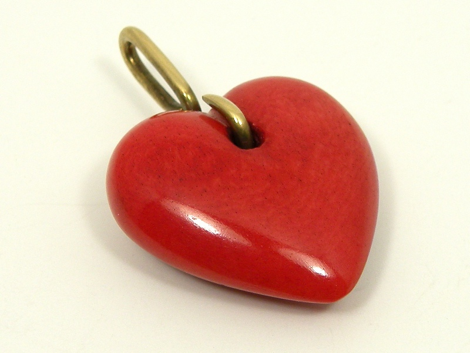
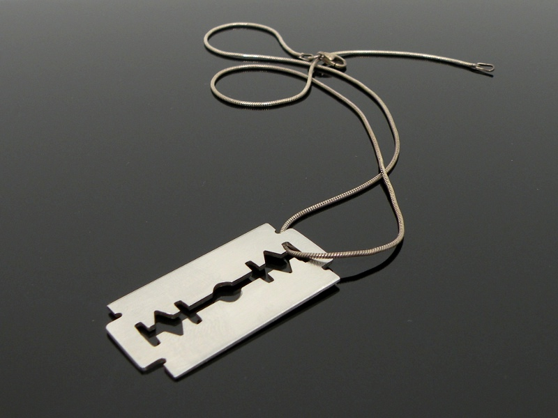
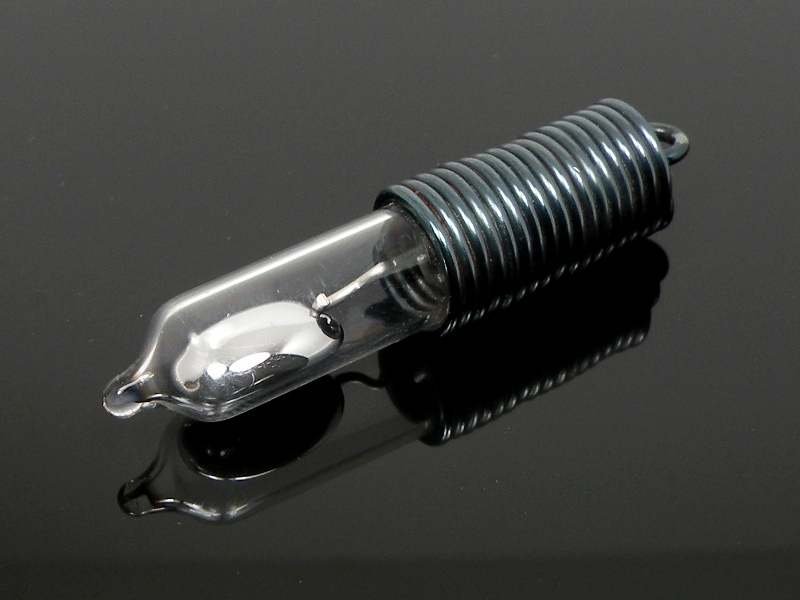

Pendants Pendants
Pendants PendantsI admit to having a predilection for minimalism: I drive a car which is the epitome of basic passenger transportation; I think cellphones should make phone calls, and nothing else; and I like to make pendants designed to be worn alone on a simple chain or cord.
This "puff" heart is carved from cow bone. It was originally left its natural ivory color, however the person for whom it was made asked that it be dyed red. A brass bail pierces the heart.
"No, this is not a real razor blade." I have had to answer that question countless times over the years. The "blade" is a piece of stainless steel, carefully cut by hand to look exactly like a double-edged razor blade. In fact, it is so close in size to a real razor blade that it fits comfortably inside an old safety razor. It is not sharp in the slightest, and I have worn it for years without a scratch.
The most enjoyable part of wearing this razor pendant around my neck is watching people's reactions. I noticed, first, that many people had no idea what it could be. One of my favorite questions was, "What does that symbol around your neck mean?" I found that the large majority of people born before circa 1980 recognize a double-edged razor blade, and most people born after that date do not. Of those people that do know what the pendant is supposed to be, there are those who are terrified that I will cut my throat any minute, and those who love it, whether it be real or not.
There are some people who would be far more afraid of this pendant than of the razor blade above. It is made from a kind of thermostat switch still found in many homes, and it contains elemental mercury.
Mercury has become one of the most feared words in the English language in recent years, and needlessly so. A broken thermometer is enough to send people running for the door and calling 911, even though the mercury gas in a florescent tube is far more dangerous than the elemental mercury you see here. Mercury in its liquid, elemental state is difficult for the body to absorb; an adult could swallow a drop of mercury and not experience any ill health effects. The organic mercury which collects in the fatty tissues of fish is much more apt to cause poisoning.
In any case, the above pendant is not only a sealed glass cylinder, the top half was covered in epoxy when the steel coil was attached. The only way mercury will escape the confines of the pendant is in case of breakage, and that should cause no more ado than a broken thermometer.
Mercury is one of the most fascinating metals because of its various physical properties. For instance, the metal will alloy with many other metals at room temperature, making it useful in the past for scavenging gold. It is very dense, weighting more than lead, yet has a melting point of -37 degrees Fahrenheit. Mercury's low electrical resistance and liquid state made it perfect for switches like the one above, and the weight of the encapsulated quicksilver makes the pendant fun to handle as the ball of metal rolls from end to end.
Created by Sean Corron, April 2, 2011.